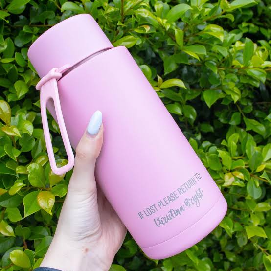
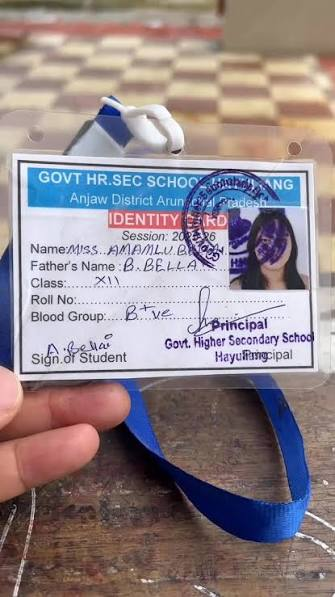

Blue Water Bottle

Status: Lost
Location: College Library
Date: 20 October 2026
View / Claim ItemA simple place to find your lost belongings.
Lost something in college? Or found something that belongs to someone else? You can report it here.

Status: Lost
Location: College Library
Date: 20 October 2026
View / Claim Item
Status: Found
Location: C Block
Date: 22 October 2026
View / Claim ItemThis website is made to help students report and find lost belongings inside the college. It is a part of our Web Designing PBL project.
SDG 11 - Sustainable Cities and Communities